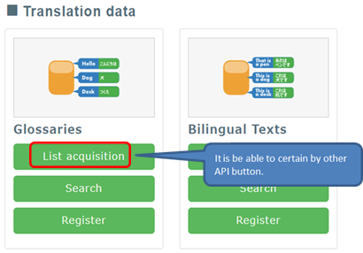
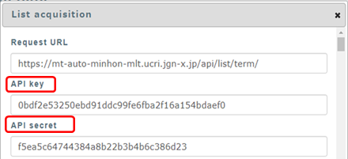
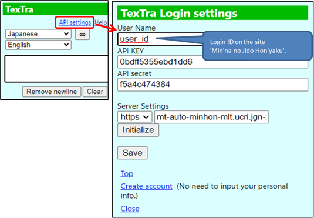

API Settings
1. On the linked page
below,
click
on Glossary ->
Registration.
Confirm
API key and API
secret.
https://mt-auto-minhon-mlt.ucri.jgn-x.jp/content/api/

Copy and paste the 'API key' and 'API
secret'
into
the appropriate boxes on the TexTra API settings
page.

2. Enter API KEY, and API
SECRET
into
the TexTra
popup.

3. Click on the 'Save'
button.
4. You
will see the message 'Log-in Succeeded' when you successfully
log-in.